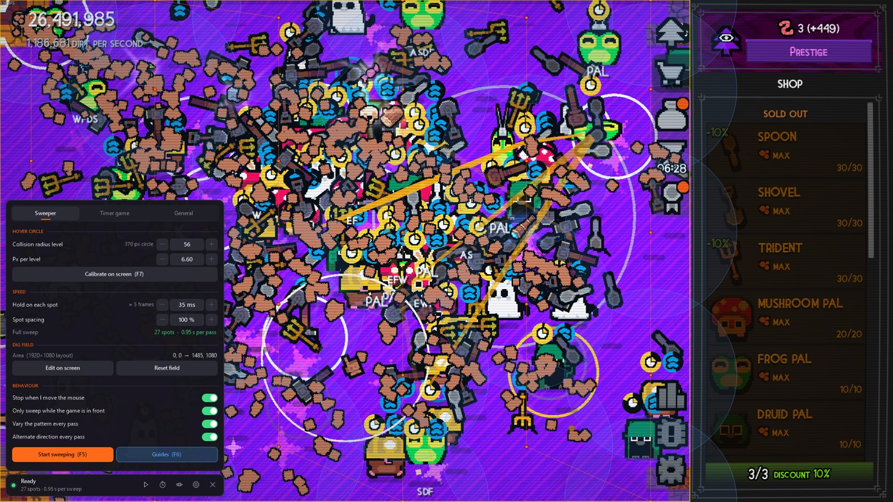
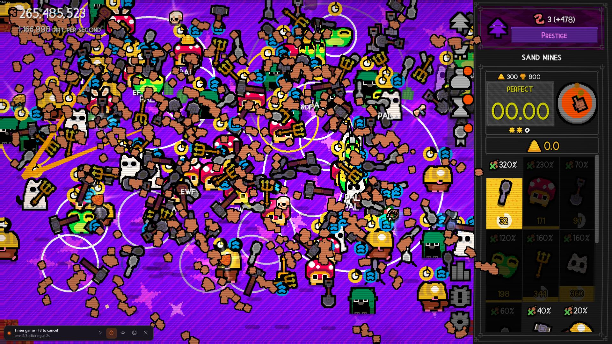

What it does
In Dirt Clicker, tools on the dig field work when your cursor's hover circle touches them. Dirt Sweeper moves the cursor over the whole field for you, resting briefly on a set of spots chosen so the circles cover every pixel with no gaps, using as few spots as possible. It also watches the timer minigame and clicks the red button exactly on time.
Covers the whole field
Every layout is checked for full coverage before it's used, so nothing is missed. Less than half a second per pass at collision radius 56.
Follows your upgrades
Set your collision radius level once and press + when you buy an upgrade.
Plays the timer game
Catches the moment each countdown starts and clicks on time, level after level. Flying dirt is ignored.
Settings in the overlay
Everything is tuned from the HUD over the game, without taking focus or alt-tabbing.
Easy calibration
Press F7 and scroll to your level until the green ring matches the game's hover circle; Ctrl + scroll fine-tunes it. Drag the dig field into place on screen.
Updates in one click
Tells you when a new version is out and installs it from the About tab, checked against the release's checksums.
Stays out of your way
Stops when you move the mouse, only sweeps while the game is in front, and uses almost no CPU.
Timer minigame on autopilot
Press F8 and click Play: Dirt Sweeper catches the moment each countdown starts and clicks the red button exactly on time, for every level in a row, then goes back to sweeping.

How to use it
- Start Dirt Clicker and Dirt Sweeper. The HUD bar appears over the game.
- Press F7 and move over the dig field. Scroll to set your collision radius level (a new game starts at level 1) until the green ring matches the game's hover circle.
- If it still doesn't match, hold Ctrl and scroll to adjust the size per level. Press F7 again when it matches.
- Press F5 to sweep. Move the mouse to stop.
- For the timer minigame, press F8, then click Play in the game.
| F5 | Start / stop sweeping |
| F6 | Show / hide guides (dig field, sweep spots, timer box) |
| F7 | Calibration ring at the cursor: scroll = collision radius level, Ctrl + scroll = size per level, Shift = bigger steps |
| F8 | Arm / cancel the timer game, then click Play |
| F9 | Show / hide the HUD |
Questions
Is it safe to use?
Dirt Sweeper never touches the game: it doesn't read or change game files or memory and doesn't inject anything. It only moves the mouse and looks at the timer area of the screen, like a person watching and clicking. Use it at your own discretion.
Some tools get missed.
Raise Hold on each spot in the Sweeper tab, and check the ring still matches the game's hover circle (F7). If everything gets hit, you can lower the hold for faster passes.
It clicks the timer too early or too late.
Change Click offset in the Timer game tab: if the game says you were late by X ms, lower it by X; if early, raise it.
Does it work at other resolutions?
Yes. Positions are scaled to the game window, and on screens wider than 16:9 the extra width goes to the dig field. The defaults are tuned for 1920×1080 fullscreen.
I found a bug or have an idea.
Please open an issue on GitHub (there's a button for it in the app's About tab too). Every report helps make Dirt Sweeper better.
How do I stop or close it?
Move the mouse or press F5 to stop sweeping. Close it with the ✕ on the HUD, or from the tray icon.
How do I remove it completely?
Close it, delete the exe, and delete the folder %LOCALAPPDATA%\DirtSweeper where its settings are saved (paste that into the Explorer address bar, or use Open settings folder in the General tab). That's everything: it installs nothing else, adds no startup entries and doesn't touch the registry or the game.
Privacy
Dirt Sweeper collects no data and has no accounts, analytics or telemetry. The only time it goes online is to ask GitHub for the latest release (at startup and once a day, which you can turn off in About) and to download an update when you click Update. Your settings stay on your PC in %LOCALAPPDATA%\DirtSweeper. Every release is built by GitHub Actions from the public source and lists the SHA-256 of its exe in SHA256SUMS.txt.